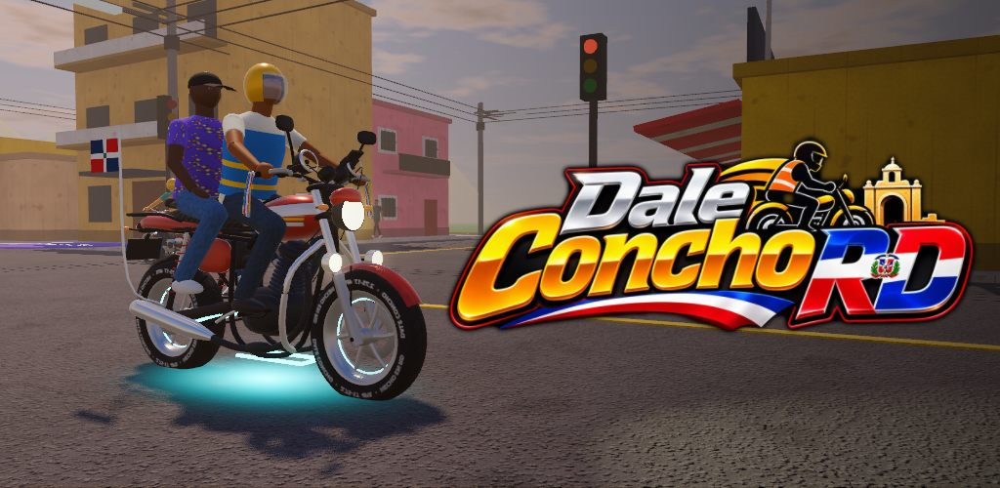
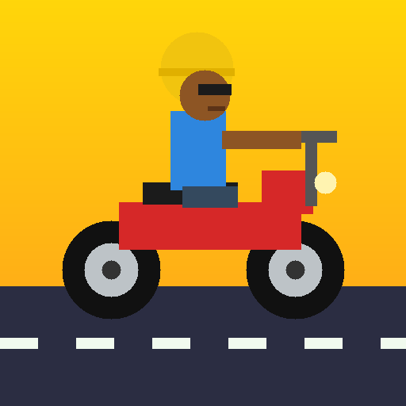

Dale Concho RD
El juego del motoconcho dominicano · por RDAYNT Games
Gratis
Sin anuncios
Se juega sin internet
Android 7 o más nuevo
Unos 80 MB
Próximamente en Google Play
Ponte el casco y sal a buscártela
Manejas tu propia moto por pueblos, avenidas y caminos de tierra de la República Dominicana. La gente te vocea desde la acera: "¡Motoconcho!". Los montas, los llevas a donde van y cobras tu pasaje. Si manejas bien, te dejan propina; si los asustas, se quejan.
La calle
- Un mapa grande con 57 pueblos unidos por carreteras y caminos de tierra, con ríos que cruzar y playa.
- Pasajeros que hablan según lo que pasa: el tapón, la policía, si van tarde o si les dio hambre.
- Voces dominicanas de verdad.
- Tráfico con carros, guaguas, camiones y otros motoconchos.
- La AMET y la policía: si te robas un semáforo, te van a buscar.
La vida del motoconcho
- Paradas en la fritura: tus pasajeros comen y te dan una propinita.
- Colmados con refresco, malta, agua, picaderas, café y energizante.
- Día y noche, gasolina, hambre, sed y sueño.
- Radio en la moto con dembow, merengue y bachata.
- GPS para llegar a donde va el pasajero.
Tu moto, tu estilo
- 9 motos en el dealer, cada una con lo suyo.
- Taller con piezas, mejoras y nitro por niveles.
- 21 accesorios: bocinas, luces, defensas, banderita, baúl y más.
- Ropa para el motoconcho. En todas las tiendas pruebas gratis antes de pagar.
- Caballitos y goma alante para los más atrevidos.
Para cualquier teléfono
- Se juega sin internet y sin anuncios.
- Gráficos RÁPIDO, BONITO y ULTRA: en los teléfonos sencillos se pone solo en RÁPIDO.
- Controles en pantalla a tu gusto: cruz o palanca, y puedes mover y agrandar los botones.